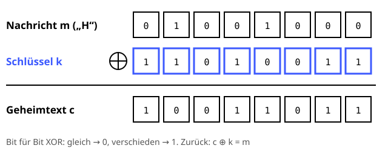

One-Time-Pad
Schutzziele: Vertraulichkeit
Das einzige Rezept mit Sicherheitsbeweis – wenn man sich genau an die Zutatenliste hält.
Definition
Beim One-Time-Pad (Einmalschlüssel) wird jedes Zeichen der Nachricht mit einem Zeichen eines echt zufälligen Schlüssels verknüpft, der genauso lang ist wie die Nachricht – in der Praxis Byte für Byte mit XOR. Wird der Schlüssel nur ein einziges Mal benutzt und bleibt geheim, ist das Verfahren beweisbar sicher (Claude Shannon, 1949): Der Geheimtext verrät nichts außer der Länge.
Zutaten
- Nachricht als Bytes
- Echt zufälliger Schlüssel, mindestens so lang wie die Nachricht
- Die XOR-Verknüpfung (⊕)
- Ein sicherer Weg, den Schlüssel vorher zu übergeben
Zubereitung
- Schlüssel aus echtem Zufall erzeugen (Würfel, Rauschen, Hardware-Zufallsgenerator). Ein Pseudozufallsgenerator genügt nicht – dann gilt der Sicherheitsbeweis nicht mehr.
- Den Schlüssel persönlich und heimlich an den Empfänger übergeben.
- Nachricht und Schlüssel Byte für Byte mit XOR verknüpfen:
c = m ⊕ k. - Den Geheimtext
cverschicken. - Der Empfänger rechnet
m = c ⊕ k, dennk ⊕ k = 0. - Den benutzten Schlüssel vernichten – niemals ein zweites Mal verwenden.
Skizze

Nachricht und Schlüssel werden Bit für Bit mit XOR (⊕) verknüpft. Blau ist geheim.
Skizze erstellt von Claude (KI)
Weiterführende Links
Tipps
- Wird ein Schlüssel zweimal verwendet, gilt
c1 ⊕ c2 = m1 ⊕ m2– der Schlüssel fällt heraus und beide Nachrichten lassen sich oft rekonstruieren. - Das große Problem ist die Schlüsselverteilung: Man braucht für jede Nachricht gleich viel geheimes Schlüsselmaterial.
- Kein Schutz der Integrität: Kippt ein Angreifer ein Bit im Geheimtext, kippt genau dieses Bit im Klartext.
- Historisch wurde das One-Time-Pad z. B. für den „heißen Draht“ zwischen Washington und Moskau genutzt.